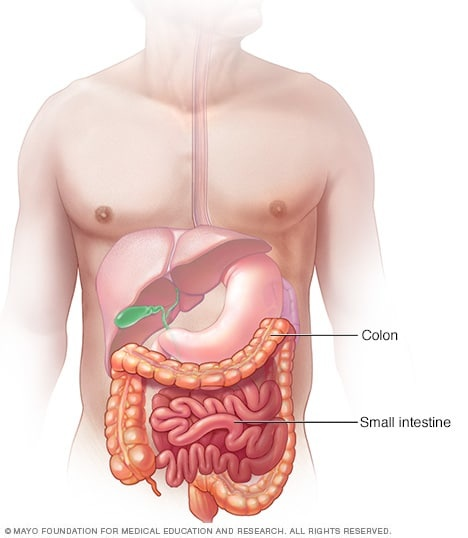

Intestinal obstruction

SYMPTOMS:
Signs and symptoms of intestinal obstruction include:
- Crampy abdominal pain that comes and goes
-
Loss of appetite
-
Constipation
-
Vomiting
-
Inability to have a bowel movement or pass gas
-
Swelling of the abdomen
CAUSES
The most common causes of intestinal obstruction in adults are:
- Intestinal adhesions — bands of fibrous tissue in the abdominal cavity that can form after abdominal or pelvic surgery
-
Hernias — portions of intestine that protrude into another part of your body
-
Colon cancer
-
In children, the most common cause of intestinal obstruction is telescoping of the intestine (intussusception).